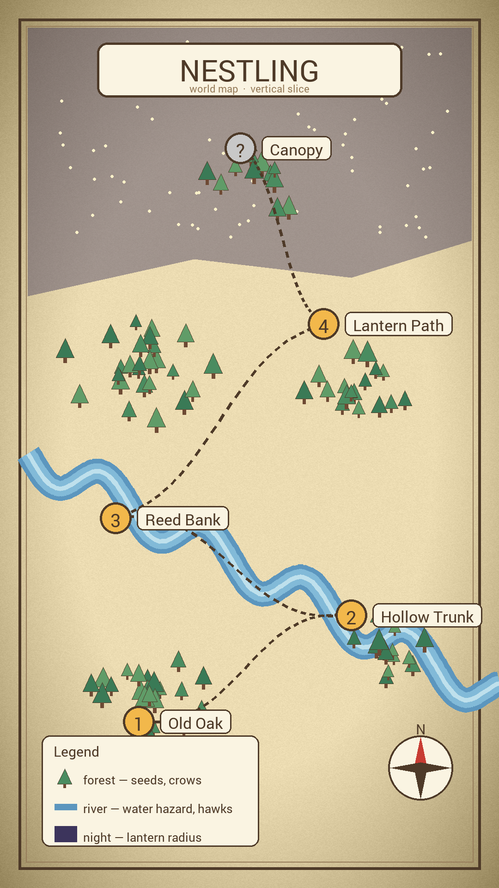

Design diary · entry 3
Why the chick never dies
Every platformer I loved as a kid punished falling. You misjudged a gap, the screen flashed, and you were back at the start of the level. Nestling started from the opposite idea: what if the ground was never the enemy? A fledgling that has just left the nest is clumsy, not fragile. It tumbles, it flaps, it lands badly and shakes it off.
So the chick cannot die from a fall. Landing costs nothing. The only things that hurt are crows, and later hawks and water. That single rule changed everything downstream: jumps could be floaty, the glide could be slow, and levels could be tall instead of long.
The world, roughly

Levels are stacked bottom to top. You start at the foot of the old oak and the whole game is one long climb, with the river as the only place the path goes sideways. Night falls as you climb, which is a tidy way to introduce the lantern without a tutorial.
What the chick can do
The state machine is small on purpose. There are five states and most of the design work went into the transitions between them, especially how quickly a glide can turn back into a flap.
What I got wrong
The first build let you glide forever. It felt great for about a minute and then the levels stopped mattering, because you could cross anything. The fix was not a stamina bar. Glide now slowly loses height, and the double jump only refreshes when you touch a branch. Crows became the pacing tool: they push you down, and being pushed down is fine, because the ground is safe.
Make the world scary and the ground kind.
Next entry: the lantern, and why night mode has no music.